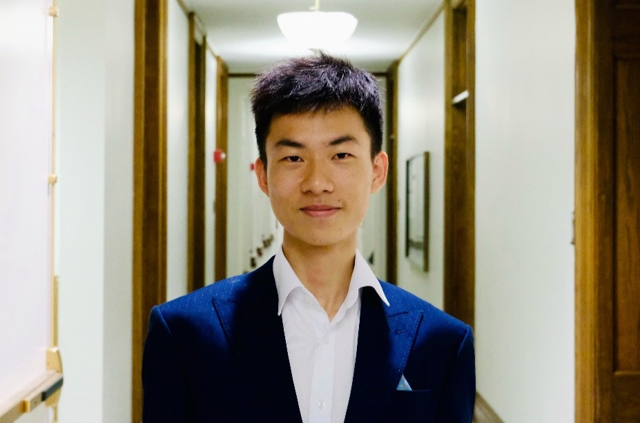
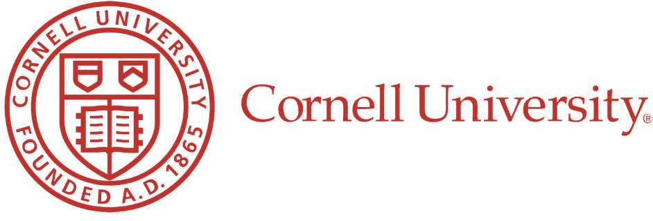
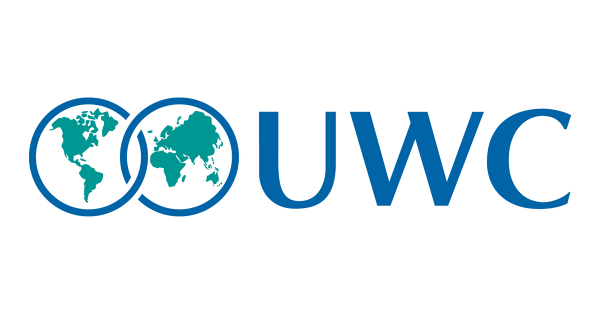
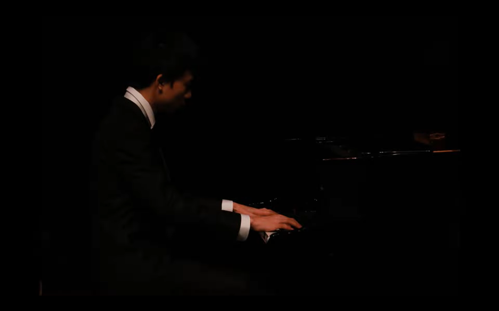
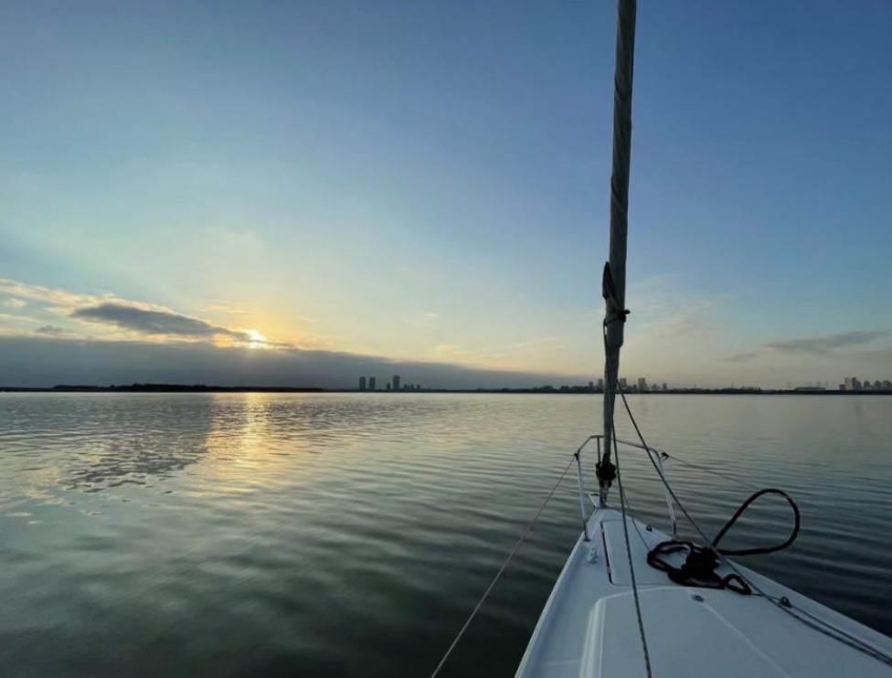
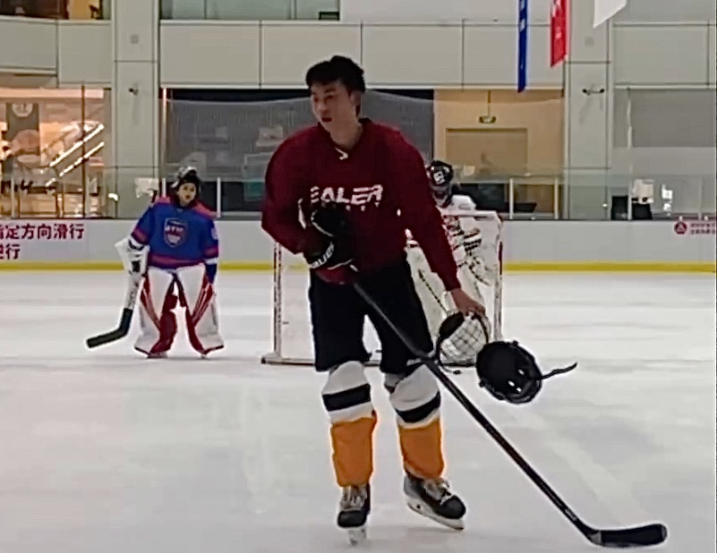
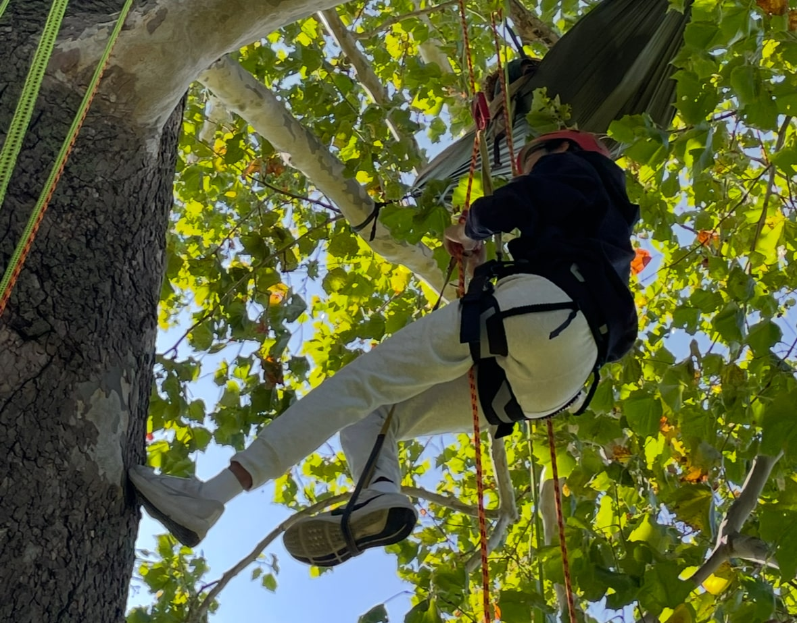

Workshop Participant @Point72
Built long/short equity strategy with factor screens and alternative data signals.



At UWC, I learned in a community where cultures meet first through respect and curiosity. Surrounded by peers and mentors from around the world, I developed a mindset grounded in empathy, global citizenship, and purpose-driven learning.
"The dreamer who do" is the value I continue to carry at Cornell. Today, I’m passionate about building solutions that make clean-energy adoption easier, more data-driven, and more financially accessible for communities everywhere.
At Cornell, my double major brings business strategy together with technical execution. In the Dyson School of Applied Economics and Management, I study capital markets, energy-transition economics, and investment decision-making — learning how incentives, social trends, and capital flows shape the future of finance. In parallel, my Data Science coursework pushes me into prototyping, machine learning, and data-driven product design, which helped me to lead real projects that connect analytical insight to practical impact.
Beyond the classroom, Cornell’s pre-professional ecosystem accelerates the transition from theory to industry. Exposure to top finance and consulting firms through on-campus recruiting gives me early access to real deal-flows, market research, and problem-solving frameworks used in the field. I actively translate coursework in finance, modeling, and sustainability into the language and rigor of the professional world.
Built long/short equity strategy with factor screens and alternative data signals.
Completed markets and research training, analyst workshops, and industry mentorship.
Evaluated trust portfolios and drafted exit strategies across diversified assets.
Built ML valuation models and back-tested momentum-based equity trading system.
Contributed to electrification project; informed a ~7% carbon-reduction pilot strategy.
Led sessions on LCOE, grid electrification and clean-tech investing fundamentals.
Conducted microplastic toxin analysis and contributed to published marine ecology study.
Led 23-student engineering team; built floating waste-collection robot with utility patent.
Developed sustainable-city model; earned Most Inspiring Project award.
Only student delegate at OTGA SEA; presented 30-minute marine sustainability framework.
Guided 30+ students; co-designed assistive tools for visually and hearing-impaired users.
Built campus-wide recycling workflow and sustainable product initiative.
| Competition | Result | Descriptions |
|---|---|---|
| Conrad Challenge | National 2nd + Best Innovation | Led marine-plastic solution; Top-2 among 20+ finalists. |
| Peer Potential Mock Trial | National 2nd Place | Defense witness; ranked #2/28 finalist teams. |
| Envirothon – Sustainability Innovation | Top 10% Award | Led research on pandemic mask microplastics. |
| YOC – China Fishery Research | Top 14% Award | Pearl River policy study: biodiversity + fisher interviews. |
| Steinway Junior Piano (China) | Finalist – 5th | Performed “Liuyang River” & Chopin Op.55 No.1. |

15+ years from Chopin & Rachmaninoff to Bill Evans jazz voicings.
Classical gave me discipline; jazz gave me freedom. Music remains my emotional reset and playground for creativity.

Raised by the coast, sailing taught me patience, risk-reading, and calm leadership in uncertainty.
US Sailing certified; happiest on the water.

Hockey keeps me sharp: fast decisions, trust, grit.
Early-morning ice, fast skates, cold air — nothing compares.

What began as a quirky hobby became a love for nature and challenge.
Rope-tangled problem-solving included — growth is vertical.